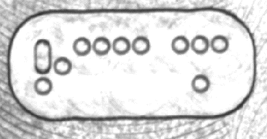
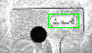
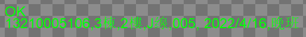

此工具为***现场项目定制开发工具，通过识别点阵编码信息获取物料生产机台信息及日期。点阵图像如下图1所示：

执行效果如下图所示：


| 分类 | 参数名称 | 参数描述 |
|---|---|---|
| 属性窗口 | ROI区域 | 工具执行识别区域，只支持仿射矩形ROI。 |
| 数据链 | 输入图像 | 输入待识读的灰度图像 |
| 二维线性变换 | 目标相对于模板的平移、旋转、缩放变换。 | |
| 高级界面 | 无 | 无 |
| 分类 | 参数名称 | 参数描述 |
|---|---|---|
| 输出窗口 | 输入图像 | 输入图像宽度、高度、像素大小。 |
| 识读结果字符串 | 根据点阵解析出的结果字符串。格式：【点阵数串，楼栋，楼层，线体，机台编号，日期，班别 】 | |
| 执行结果 | 工具执行结果。 | |
| 执行时间 | 工具执行时间。 | |
| 数据链 | 识读结果字符串 | 根据点阵解析出的结果字符串。格式：【点阵数串，楼栋，楼层，线体，机台编号，日期，班别 】 |
一般要求ROI大小为点阵区域1.2~2倍，ROI过大会导致识别失败，由于点阵位置固定，故ROI较容易选取，也可先使用几何定位获取ROI。
参见“\Samples\点阵识别工具.gvp”。